At SOULVEST our goal is to put average people’s money to work, which is why we only require an initial investment of $2,000.00 in order to get started. After that, you can dictate how much, or how little you would like to invest.
Yes! We can roll over an existing IRA or 401K, or simply invest cash at your leisure. We can accommodate the following types of accounts:
Sustainable, responsible and impact investing (SRI) is an investment discipline that considers environmental, social and corporate governance (ESG) criteria to generate long-term competitive financial returns and positive societal impact.
There are several motivations for sustainable, responsible and impact investing, including personal values and goals, institutional mission, and the demands of clients, constituents or plan participants.

You should receive the money back to your checking account within 7-10 business days.
We use bank level encryption for all linked accounts and have partnered with Securities Investor Protection Corporation to insure every SOULVEST account up to $500,000.00. For more information, go to www.sipc.org.
No. SOULVEST is a collection of online, professionally managed portfolios that feature sustainable third-party mutual funds. The SOULVEST portfolios are managed by Perigon Partners, a Registered Investment Advisor.
Selecting investments based on a specific theme such as renewable energy, water conservation, and women’s rights.
Investing capital directly into banking and lending institutions that serve low-income and underserved communities.
Engaging a company as a shareholder, either formally through resolutions and proxy voting, or informally through direct dialogue.
The preferential selection of companies with strong ESG performance relative to their peers—also known as best-in-class screening.
The exclusion of companies or sectors based on specific ESG criteria such as tobacco, weapons, fossil fuels, or nuclear energy.

{kind=link}
{kind=link}